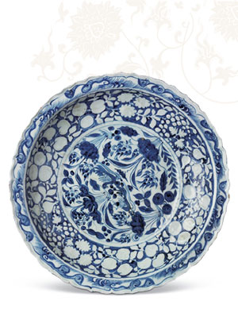

中国古代瓷器艺术展
- 展期：专题展览（常设）
- 展厅：北19展厅

中国陶瓷艺术历史悠久，是贯穿中华文明发展进程而从未中断的物质文明：原始社会的彩陶、黑陶、商周时期的白陶、陶釉，以及之后相继出现的青瓷、白瓷、釉上彩、釉下彩、颜色釉，甚至琉璃、珐花、紫砂器等，美不胜收，蜚声寰宇。
中国国家博物馆藏瓷甚丰，特选百余件(套)古代瓷器精品陈列于本展览中，以飨广大观众。展览分为三个单元：颜色釉瓷艺术、釉下彩瓷艺术和釉上彩瓷艺术。展品年代由西周贯穿至清末，其中南北朝时期的青釉莲花尊、唐代秘色瓷、元代青花云龙纹罐、明永乐的青花折枝牡丹纹折沿盘、清康熙的珐琅彩缠枝花卉纹蒜头瓶、清雍正的粉彩过墙枝桃纹盘、清乾隆的青花折枝花果纹六方瓶等均为陶瓷史中的精品。
<
>